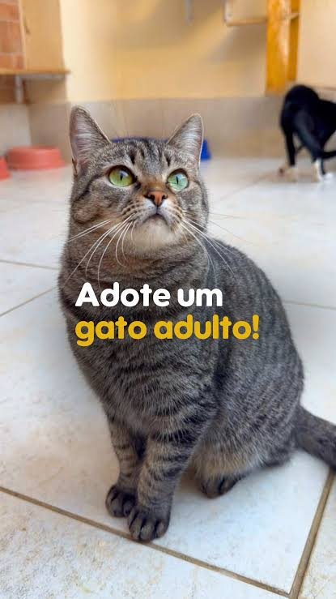
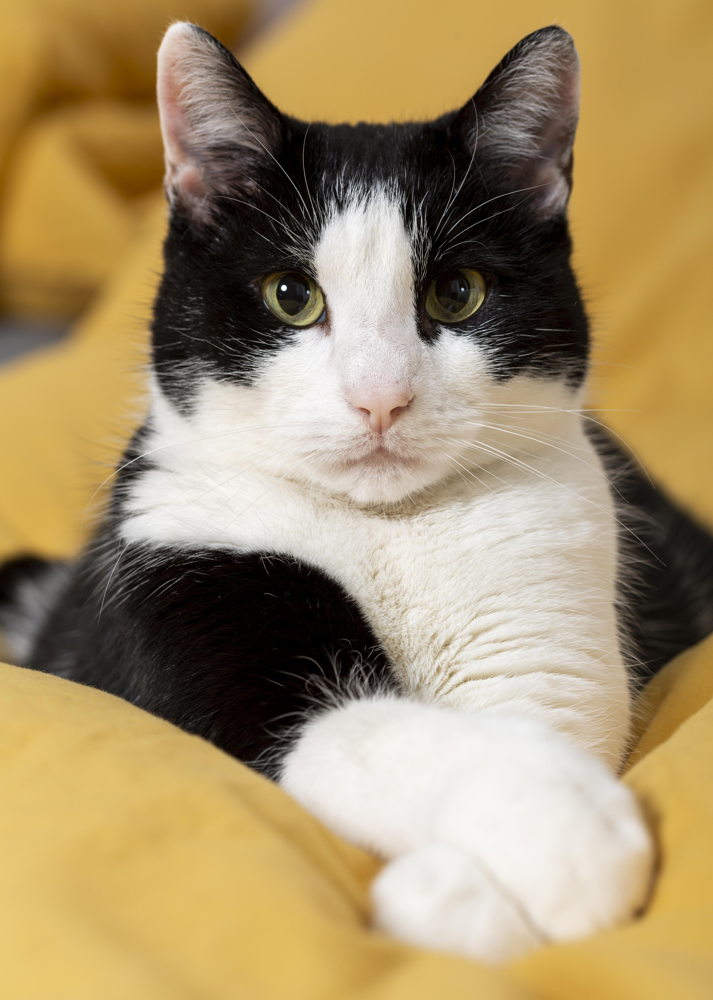

Sobre a ONG
Transformando solidariedade em oportunidades
Somos uma organização do terceiro setor dedicada a promover inclusão social,
apoiar comunidades em
situação de vulnerabilidade e criar oportunidades para um futuro mais justo.
Acreditamos que pequenas atitudes podem gerar grandes mudanças. Por meio de
projetos
sociais, ações
voluntárias e campanhas de arrecadação, trabalhamos em parceria com pessoas, empresas e comunidades
para
transformar recursos e solidariedade em impacto positivo.


Nossa missão
Nossa missão é contribuir para a construção de uma sociedade mais inclusiva e
igualitária, oferecendo apoio a pessoas que precisam de oportunidades para melhorar sua qualidade de
vida.
Atuamos em diferentes frentes, desenvolvendo iniciativas voltadas à educação,
alimentação, inclusão social e desenvolvimento comunitário.
 Nossos Projetos
Contate-nos
Nossos Projetos
Contate-nos